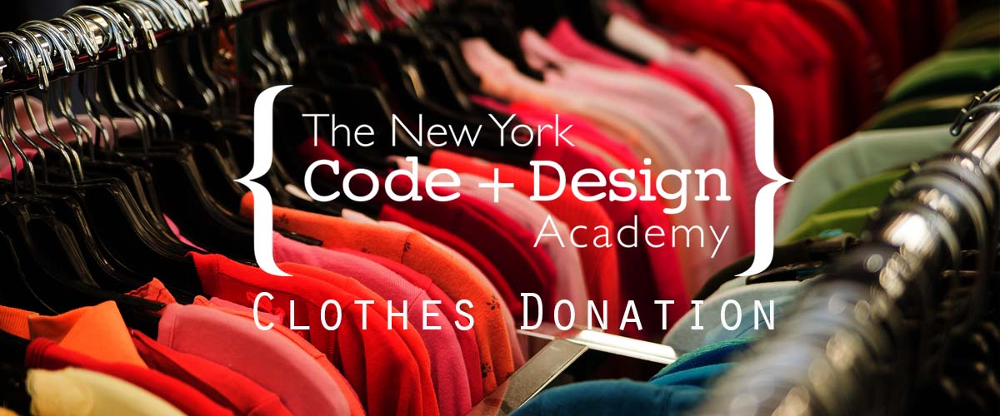

Thank you for your visit. Our team, Nathaniel, Chuong and Rari are Web Developer students at NYCDA Philadelphia. Our project concerning to collect your used clothes at your convenience and use it to support programs that address the concerns and need of homeless people in the Greater Philadelphia.
Thanks again for you support!
In a previous life, Nate worked as an analytical chemist at a large chemical company in the Philadelphia suburbs, working primarily with gas chromatography/mass spectrometry to examine everything from high-performance polymers to natural gas odorants. In a future life, Nate would like to work on a variety of software development projects, with interests ranging from full stack web development to microcomputing.
Being good at science, I graduated and worked as an electronics engineer before venturing into the dynamic world of design. He have a passion for simple interfaces, a love for travel, and taking pictures that tell stories. His unique skill set of science and art allow him to participate and contribute to both the technical and aesthetic aspect of every project.
Donec sed odio dui. Cras justo odio, dapibus ac facilisis in, egestas eget quam. Vestibulum id ligula porta felis euismod semper. Fusce dapibus, tellus ac cursus commodo, tortor mauris condimentum nibh, ut fermentum massa justo sit amet risus.